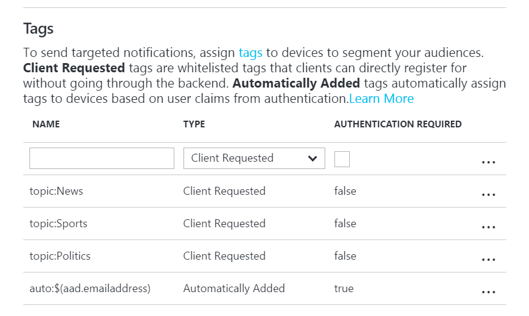

Concepts
Thus far, we've looked at options for communicating with the backend while the client is running. When the user changes apps, the client is suspended or placed on a low priority background thread. No user interaction is possible during this time.
Most developers have a need to communicate interesting things to the user and this can only happen if the app is running. Fortunately, the major mobile platform providers have implemented some form of push notifications which are delivered to the app when it isn't running.
Push notifications are messages that are sent to your mobile client whether the app is running or not. The mobile device will wake up your app to deliver the message. You have probably seen many examples of push notifications in your daily mobile phone usage. There are several uses, but they fall into two broad areas. Marketing messages are sent to inform the user of the app of something. Perhaps it's a new version, or a specific promotion for your favorite store. Silent notifications are sent to inform the app that something important has happened. For example, you may want to send a message when a data element has been updated in a table. Silent notifications are generally not to be seen by the user.
Delivery of these messages comes with some significant penalties. You cannot guarantee the delivery of a message. The user of the device decides whether to accept messages or not. You cannot guarantee a delivery time, even though most messages are delivered within a couple of minutes. Finally, there is no built in acknowledgement of the message. You have to do something extra in code to ensure the delivery happens.
How Push Notifications Works¶
Each platform provider provides their own push notification service. For example, iOS uses Apple Push Notification Service (APNS). Google uses Firebase Communications Manager (FCM). This used to be called Google Communications Manager or GCM. It's the same service; just rebranded. Newer versions of Windows (including Universal Windows) use Windows Notification Service (WNS) whereas older versions of Windows Phone used Microsoft Platform Notification Service (MPNS). There are other push notification services, for example, for FireOS (run by Amazon) and China (run by Baidu).
In all cases, the process is the same:
The mobile device initiates the process, registering with the Platform Notification Service (PNS). It will receive a Registration ID in return. The registration ID is specific to an app running on a specific device. Once you have the registration ID, you will pass that registration ID to your backend. The backend will use the registration ID when communicating with the PNS to send your app messages.
This is where complexity rears its ugly head. Without an intervening service, the backend will need to do the following:
- Store the registration ID and PNS in a database for later reference.
- Lookup the list of registration IDs on a per-PNS basis and send a provided message in batches.
- Handle retry, incremental back-off, throttling and tracking for each message.
- Deal with registration failure and maintenance of the database.
This is just the start of the functionality. In general, marketeers will want tracking of the messages (such as how many were opened or acted on, what demographics were the opened messages, etc.) and they will want to push to only a subset of users, targetted by opt-in lists or other demographic information.
Introducing Notification Hubs¶
Developing a system for pushing notifications to devices is a significant undertaking. I would not recommend anyone undertake such a service for their app. Fortunately, there are a number of services that can do this for you. Azure's entry into this space is Azure Notification Hubs. Notification Hubs (or NH as we will call it) handles all the registration and bulk sending logic to allow you to send a single message to multiple recipients without having to worry about what platform they are on. In addition, NH has support for tagging individual device registrations with information about the user, groups, or opt-in lists.
Azure Mobile Apps has direct support for Notification Hubs within the client SDK and Azure App Service has a registration service built right in for NH, allowing you to easily integrate your mobile app with the facilities that NH provides.
Tip
You do not have to run Azure Mobile Apps or Azure App Service to use Notification Hubs. You do need to have a registration service somewhere. However, Notification Hubs is a standalone service. Do not use Notification Hubs as the registration service - you will need to distribute the key with your service, and that opens up security concerns.
Notification Hubs has two features that are important in mobile push scenarios - tags and templates. while you will see these two features a lot in this chapter, we will also use other features of Notification Hubs, such as Scheduled Push, Geofenced Push and Analytics.
Tags¶
When a device registers itself with Notification Hubs (via the registration endpoint), you can specify a number of tags that are associated with the device. The tag allows you to segment the devices and push a message to only a portion of the devices. Technically, a tag is a string. The string can be up to 120 characters long, but has a restricted character set (alphanumeric plus a few special characters).
You can use tags to allow the user to register interest in a topic, or register on their behalf based on just about anything you want. If you want to push to a department or users in a specific location, you can automatically register for those tags within the registration service. You can also use tags to do "user tagging" - allowing you to push to a user ID or email address instead of a device ID.
When sending a push notification, you can broadcast a message to everyone, but it's generally better to send to a tag. You can also combine tags with boolean operations. For example, you might want to push a Marketing message to all sales people in Washington with (state:Washington && dept:Sales). Tag expressions like this are limited in the number of tags allowed.
Templates¶
There are multiple plaform notification systems and each one wants a message sent to them in a specific format. APNS and FCM require a JSON payload (each of which is different), while WNS requires an XML payload. Effectively, this makes the backend of your app responsible for a part of the presentation layer, which is something that has been avoided thus far. In addition, you might want to localize the message for your audience and potentially use string replacement to customize the message for the recipient.
Templates provide a way to send cross-platform notifications and customize the message for each recipient. You can use locale files to insert locale-specific messages into the template.
Configuring Notification Hubs¶
Our first step is to configure our backend. Thus far, we have implemented an Azure App Service with a SQL Azure database, and that is our starting point again. To those resources, we will add the Notification Hub, which starts just like the addition of any other resource:
- Log into the Azure portal.
- Click on the + NEW button in the top right corner (or the + ADD button at the top of your resource group).
- Select or search for Notification Hub.
- Click on Create.

- Enter the information required. You will need to create both a notification hub and a namespace. I generally add the
-nsdesignation to a namespace. - Click on Create.
Notification Hubs has three tiers which give you increasing numbers of pushes, plus additional features. The Free tier provides just push services. The Basic tier gives you the more pushes plus the opportunity to buy additional pushes. Telemetry, scheduled push and multi-tenancy are only provided in the Standard tier, which should be your choice for production workloads.
When considering architecture, you should use one Notification Hub per mobile backend. Notification Hub namespaces are used for deployment grouping. For example, you might want to give a different namespace to each tenant in a multi-tenant environment.
App Service Push is Global to the App Service
If you run your App Service with multiple slots (see Chapter 9 for details on slots), then note that the configuration of App Service Push is global to all slots within your App Service.
Once your notification hub has been created, you will see both the hub and the namespace listed in your resource group. Note that we have not actually linked the notification hub to any platform notification services yet. We will do that later.
Configuring Push Registration¶
Push registration is generally handled by the mobile backend, and there is a feature of the App Service for this purpose. Although it is possible, resist trying to get mobile clients to register with the notification hub directly.
- Log into the Azure portal.
- Select your mobile backend.
- Click on Push (under the SETTINGS menu).
- Click on Connect.
- Select the notification hub you created earlier.
- Wait for the notification hub to be connected (it takes approximately 10 seconds).

You can now decide which tags are valid for this application. The mobile client will request a list of tags. The push registration service will use this information to register the appropriate tags with the notification hub.
Info
The process is called push registration, but the entity that is created in notification hubs is called an Installation.
There are two types of tags. Client requested tags may be requested by the mobile client during the registration process. Automatically added tags are added by the mobile backend. Let's take an example. My mobile backend is connected to Azure Active Directory. I've configured my backend as follows:

Here, I have three client requested tags and an automatically generated tag that is only added when authenticated. Let's suppose that the mobile client requested [ topic:World topic:Sports ] and the mobile client was authenticated as username user@foo.com. With this configuration, the user would be registered for the following tags:
- topic:Sports
- auto:user@foo.com
The topic:Politics and topic:News tags would not be added because the user did not request them. The topic:World tag would not be added because it is not in the whitelist of allowed client requested tags.
Info
There is no ability to request any tag (a wild-card) because it is a large security hole. With a wild-card tag, you could request push notifications for a user or group to which you were not allowed.
The $(provider.claim) format is used in automatically added tags to add claims from the authenticated userinto the notification hub installation. You can use any claim that is returned by the /.auth/me endpoint. The standard identifiers are:
- $(provider.emailaddress)
- $(provider.identityprovider)
- $(provider.name)
Replace provider with the provider name (facebook, google, microsoftaccount, twitter or aad). The list of claims that are available is different for each provider and additional claims may be available. It is possible to configure Azure AD to return groups, for example. Check the output of the /.auth/me endpoint to determine which claims are available.
Info
The automatic claim tags are only included when authenticated with a supported authentication provider. If you are using Custom Authentication, you must also use a custom WebAPI controller to do push registration if you wants claims based on your authentication.
A claim name can resolve to multiple claim types. For example, $(aad.name) resolves to the following claims:
- http://schemas.xmlsoap.org/ws/2005/05/identity/claims/name
- http://schemas.microsoft.com/ws/2008/06/identity/claims/name
- name
In this case, three tags may be created - one for each unique name.
Warn
App Service Push provides a default tag called _UserId. This is currently badly formed based on the MD5 of the SID provided in the authentication token. My recommendation is to not rely on or use the default tags that are provided. Set up your own tags.
Once you have configure the tags, click on Save to save your work.
Registering Your Mobile Client¶
After you have gained the requisite platform-specific registration ID, you need to pass this to the mobile backend. The registration endpoint listens on /push/installations/{guid} where the GUID is a unique ID for the app on a specific mobile device. The Azure Mobile Apps client generates this for you. You must HTTP PUT a JSON Installation object to this URL. A simple (empty) Installation object looks like this:
{
"installationId": "{guid}",
"platform": "gcm",
"pushChannel": "{registrationid}"
}
The minimal settings are the installationId, platform, and pushChannel. The pushChannel field needs to be set to the registration ID of the platform. The platform is set to the appropriate value for the platform you are using - gcm, apns or wns. You can also add tags and template into this installation object. Check out the recipes section for details on requesting tags and templates.
There is a simple class for implementing an installation, which I place in Abstractions\DeviceInstallation.cs within the shared project:
using System;
using System.Collections.Generic;
using System.Linq;
using System.Text;
using System.Threading.Tasks;
using Newtonsoft.Json;
namespace TaskList.Abstractions
{
public class DeviceInstallation
{
public DeviceInstallation()
{
Tags = new List<string>();
Templates = new Dictionary<string, PushTemplate>();
}
[JsonProperty(PropertyName = "installationId")]
public string InstallationId { get; set; }
[JsonProperty(PropertyName = "platform")]
public string Platform { get; set; }
[JsonProperty(PropertyName = "pushChannel")]
public string PushChannel { get; set; }
[JsonProperty(PropertyName = "tags")]
public List<string> Tags { get; set; }
[JsonProperty(PropertyName = "templates")]
public Dictionary<string, PushTemplate> Templates { get; set; }
}
public class PushTemplate
{
public PushTemplate()
{
Tags = new List<string>();
}
[JsonProperty(PropertyName = "body")]
public string Body { get; set; }
[JsonProperty(PropertyName = "tags")]
public List<string> Tags { get; set; }
}
}
The Installation object is also available in the Notification Hubs SDK, but I find bringing in the entire Notification Hubs SDK just for this is a little overkill. You can create a suitable installation and register with the InvokeApiAsync<T,U>() method:
public async Task RegisterForPushNotifications(MobileServiceClient client)
{
if (GcmClient.IsRegistered(RootView))
{
try
{
var registrationId = GcmClient.GetRegistrationId(RootView);
//var push = client.GetPush();
//await push.RegisterAsync(registrationId);
var installation = new DeviceInstallation
{
InstallationId = client.InstallationId,
Platform = "gcm",
PushChannel = registrationId
};
// Set up tags to request
installation.Tags.Add("topic:Sports");
// Set up templates to request
PushTemplate genericTemplate = new PushTemplate
{
Body = @"{""data"":{""message"":""$(messageParam)""}}"
};
installation.Templates.Add("genericTemplate", genericTemplate);
// Register with NH
var response = await client.InvokeApiAsync<DeviceInstallation, DeviceInstallation>(
$"/push/installations/{client.InstallationId}",
installation,
HttpMethod.Put,
new Dictionary<string, string>());
}
catch (Exception ex)
{
Log.Error("DroidPlatformProvider", $"Could not register with NH: {ex.Message}");
}
}
else
{
Log.Error("DroidPlatformProvider", $"Not registered with GCM");
}
}
Where is that endpoint?
The /push/installations endpoint is part of App Service Push - a feature of the Azure App Service resource. This exists on your .azurewebsites.net domain. It is not part of Notification Hubs.
This is normally placed within the platform-specific provider since the details on how to get the registration ID and platform are different. This version is for the Android edition as an example. Using InvokeApiAsync() instead of relying on the in-built Azure Mobile Apps push registration methods gives you more control over the process of registration.
Next Steps¶
Each push notification system is different and requires different configuration in both the mobile client and backend registration system. You can jump directly to a specific platform: